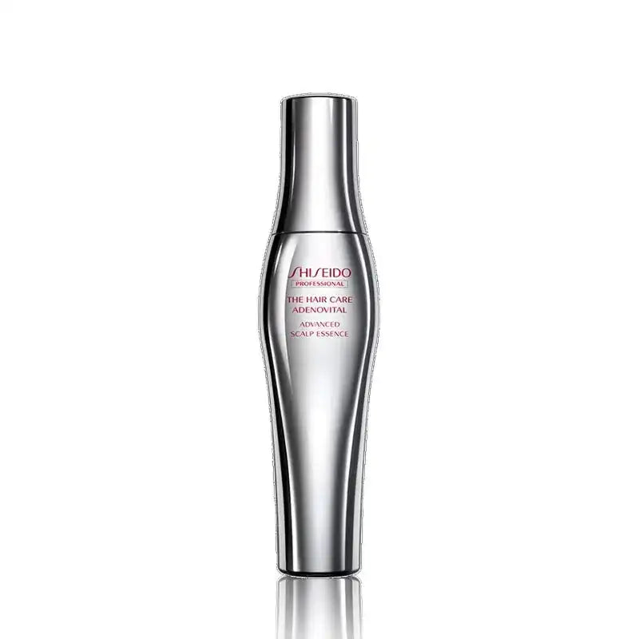

EMPATHY
こんな「毛先は整ったのに」、心当たりありませんか。
- トリートメントもオイルも一通り揃えたのに、髪全体の印象だけが変わらない
- 手触りは良くなったはずなのに、写真に写った自分の髪だけ、なぜか元気がなく見える
- 美容師さんに「地肌、少し乾燥気味ですね」と言われて、そのまま何もしていない
- シャンプーで洗っている=頭皮のケアはできている、と何となく思っていた
- 分け目やつむじの写真を撮られるのが、前より少しだけ苦手になった
- 排水口やブラシに残る髪の量を、以前より意識して見るようになった
- 頭皮ケアという言葉は知っているのに、「まだ自分には早い」で毎回止めてきた
一つでも頷いたなら、あと3分だけ読み進めてほしいんです。
私はこのシリーズで、5回かけて「髪そのもの」を整えてきました。第2弾で毎日のシャンプーを変え、第1弾で洗い流さないトリートメントを足し、第3弾で仕上げのバームを加え、第4弾で週数回の集中ケアを挟み、第5弾で香りという仕上げまで乗せた。正直、「今ある髪」に対してやれることは、ほぼやり切った感覚がありました。
でも、ある日ふと気づいたんです。5回とも、私が見ていたのは「毛先から中間」だけだった。傷み、まとまり、艶、香り。ぜんぶ、鏡を見ればすぐ分かる場所です。
頭皮は、鏡を見ても直接は見えません。だから、5回ぶん時間もお金もかけておきながら、髪が生えてくる場所そのものには、ただの一度も手を伸ばしていなかった。──足りなかったのは、ケアの本数じゃなかった。「見える場所」ばかり数えて、「見えない場所」を数に入れていなかっただけなんです。
IF NOTHING CHANGES
正直に言うと、いちばん怖いのは「頭皮が乾燥していること」そのものじゃありません。
"予防"という選択肢を持てる時期を、気づかないまま通り過ぎてしまうことです。
頭皮ケアって、不思議な立ち位置にあります。困っていない人は「まだ自分には早い」と言って始めない。そして本気で気になり始めた人は、もう「予防」という言葉では探さなくなる。つまり、予防のためのケアは、"まだ困っていない今"にしか始められないんです。やらない理由がいちばん強い時期と、始めるべき時期が、まるごと重なっている。
そして、この構造にはお金の話も付いてきます。私はこのシリーズで、毛先から中間のケアに5本を積み上げてきました。¥3,740 + ¥4,180 + ¥4,290 + ¥7,260 + ¥8,800 で、合計¥28,270。1本ずつは納得して買ったものばかりです。後悔もしていません。
でも同じ期間、頭皮に使った金額は、¥0でした。
毛先に¥28,270、土台に¥0。数字にして並べた瞬間、私はちょっと言葉を失いました。畑でいえば、収穫した野菜を毎日ていねいに磨きながら、土には一度も水をやっていなかった、ということです。
さらに厄介なのは、この状態が"感覚では気づけない"ことです。毛先のケアは、使ったその日に手触りで分かる。だから続けられる。頭皮のケアは、使った日に何かが劇的に変わるわけではありません。だから、後回しにしても痛みがない。痛みがないから、10年でも後回しにできてしまう。
半年後も、1年後も、たぶん同じです。6本目のトリートメントを比較して、7本目のオイルを探している。見える場所の解像度だけが上がっていって、見えない場所は、ずっと手つかずのまま。
いちばんもったいないのは、ここです。第1〜5弾で「今ある髪」はもう整っているのに、その髪が出てくる場所だけが、5回ぶん置き去りになっていること。
でも──足りなかったのは、ケアの質でも量でも本数でもなかったんです。「結果(毛先)」と「土台(頭皮)」を、別の階層として持っていなかっただけ。まだ間に合います。変えられるのは、今夜のお風呂上がりの、たった20プッシュからです。
THE TURN
そこでたどり着いたのが、「アデノバイタル アドバンスト スカルプエッセンス」でした。
ここで一つ、決定的なことに気づいたんです。第1〜5弾で紹介してきたアイテムは、どれも「今ある髪」に対する設計でした。補修する、まとまりを出す、艶を足す、香らせる。すでに生えている髪を、どう良く見せるかという発想です。
これは欠点ではありません。むしろ当然です。毛先の傷みは今そこにある問題なので、今ある髪に効く設計が正しい。5本とも、その役割をきちんと果たしてくれました。
一方で今回のアイテムは、そもそも見ている場所が違います。補修でもスタイリングでもなく、頭皮に使う薬用育毛エッセンス(医薬部外品)。承認されている効能は「薄毛・脱毛の予防」です。"今ある髪をどうするか"ではなく、"これから生えてくる髪の環境をどう保つか"。時間軸が、まるごと1段階うしろにあります。
言ってしまえば、第1〜5弾が"結果"へのケア。そしてこの1本が"土台"へのケア。結果だけを磨いても髪はきれいになります。でも、土台に1枚敷いておくと、「今」と「これから」の両方に手が届くようになります。
私がこのエッセンスを信頼できると感じた理由は、大きく3つ。
医薬部外品として、効能の範囲がはっきりしている
アデノシン、パナックスジンセンエキス、ソフォラ抽出液など6つの有効成分が明記され、「薄毛・脱毛の予防」という承認された効能の範囲が定まっています。"なんとなく良さそう"ではなく、表示で判断できます。
第1〜5弾と役割がひとつもぶつからない
使う場所は頭皮、使うタイミングは洗髪後または乾いた頭皮。洗い流しません。今のケアを1つも変えず、その下に1枚敷くだけで完結します。
頭皮保湿成分APコンプレックスも入っている
アンズ果汁由来の保湿成分を配合。薬用育毛エッセンスでありながら、頭皮の乾燥ケアも同時にできる設計です。「地肌が乾燥気味」と言われた人には、地味だけれど大きい違いでした。
「髪を良く見せるケア」から、「髪が育つ場所を保つケア」へ。5回かけて結果ばかり磨いてきたからこそ、いま土台に手を伸ばす意味があります。
※本商品は医薬部外品であり、承認された効能は「薄毛・脱毛の予防」です。発毛を確約するものではなく、感じ方には個人差があります。
THE PRODUCT
ザ・ヘアケア アデノバイタル アドバンスト スカルプエッセンス とは
資生堂プロフェッショナルは、美容室・サロンの現場向けにヘア製品を展開しているブランド。その中で「アデノバイタル」は、頭皮ケアの領域を担うラインです。今回のアドバンスト スカルプエッセンスは、そのラインの薬用育毛エッセンスにあたります。
第1〜5弾で紹介した5本は、すべて化粧品でした。今回は初めて医薬部外品です。ジャンルそのものが変わる、シリーズ唯一の1本になります。

- タイプ
- 薬用育毛エッセンス(医薬部外品/頭皮用美容液・洗い流さない)
- 価格
- ¥5,776(ALBUM ONLINE STORE・180mL/通常¥7,700から24%オフ・差額¥1,924/約¥32.1/mL)
- 有効成分
- アデノシン、パナックスジンセンエキス、ソフォラ抽出液、β-グリチルレチン酸、パントテニールエチルエーテル、ニコチン酸アミド
- その他成分
- 頭皮保湿成分APコンプレックス(アンズ果汁由来)
- 効能
- 薄毛・脱毛の予防(医薬部外品として承認された範囲)
- 使うタイミング
- 洗髪後のタオルドライ後、または乾いた頭皮に。朝晩1日2回が目安
- 使い方
- ノズルを頭皮に直接あて、頭皮全体に約20プッシュ。そのまま指の腹でなじませ、軽くマッサージ
- 使う場所
- 頭皮(毛先ではありません)
- ブランド
- 資生堂プロフェッショナル(第1〜5弾とは別ブランド・シリーズ初登場)
このエッセンスのいちばんの特徴は、「今のケアの工程を、1つも置き換えない」という点です。シャンプーもトリートメントもオイルもバームも、今のまま。第1〜5弾で作った流れには、何も手を加えません。その"下"に、頭皮への20プッシュを1工程足すだけ。だから「今使っているものを捨てる」という判断が、一度も発生しません。
そして180mLという容量。朝晩1日2回・1回約20プッシュを目安にすると、1日おおよそ4mL前後。180mLなら、およそ45日分。1日あたりにすると約128円という計算になります。夜だけの1日1回で使う場合は、単純計算で約90日分・1日あたり約64円。"1本"として見ると身構える金額が、"1日あたり"で見るとまったく違う数字に見えてきます。
※使用量は髪の長さ・量・地肌の状態によって変わるため、あくまで目安です。
WHY IT WORKS
「で、結局それの何がいいの?」に、飾らず正直に答えます。
毛先を良く見せるだけじゃなく、その髪が出てくる場所を保っておく。これは、結果へのケアを5本ぶん積み上げてきたからこそ、「結果だけ磨いても届かない場所がある」と分かった、私のいちばん正直な実感です。
※感じ方には個人差があります。効果効能を保証するものではありません。
WHY TRUST IT
正直に言うと、私は「有名ブランドだから」だけでは商品を信じないタイプです。
それでもこのエッセンスを紹介したいと思えたのは、こんな背景があるからです。
資生堂プロフェッショナルという、サロン向けの作り手
第1〜5弾で紹介したどのブランドとも重なりません。今回がシリーズ初登場です。美容室で扱われる製品を作り続けている作り手が、頭皮ケア向けに設計したラインです。
医薬部外品として、効能の範囲が承認されている
化粧品ではなく医薬部外品。「薄毛・脱毛の予防」という効能の範囲が定められています。効果が大きいという意味ではなく、"何を言っていい商品なのかが決まっている"という意味で、判断材料としてはっきりしています。
有効成分が6つ、すべて名前で公開されている
アデノシン、パナックスジンセンエキス、ソフォラ抽出液、β-グリチルレチン酸、パントテニールエチルエーテル、ニコチン酸アミド。"独自複合成分"のような曖昧なまとめ方ではなく、個別の名前で確認できます。
「アデノバイタル」は頭皮ケアのラインとして展開されている
思いつきの単発商品ではなく、頭皮ケアという領域に絞って構成されたラインの中の1本。ラインとして継続しているという事実そのものが、私にとっては安心材料でした。
通常¥7,700が¥5,776(24%オフ・差額¥1,924)
毎日続けることが前提のアイテムだからこそ、この差額は無視できません。1本あたり¥1,924の差は、続ける年数の分だけ効いてきます。
サロン専売品を、公式通販でそのまま買える
今回紹介する ALBUM ONLINE STORE(株式会社オニカム運営)は、美容室専売品を扱う美容通販サイト。第1弾のオラプレックス、第2弾・第4弾のケラスターゼ、第3弾のTHE HAIR BALM 997、第5弾のLOA、そして第6弾の資生堂プロフェッショナル。6回ぜんぶ、ずっと同じお店です。
※本商品は医薬部外品であり、承認された効能は「薄毛・脱毛の予防」です。発毛を確約するものではありません。感じ方には個人差があります。
WHAT PEOPLE NOTICE
こんな使用感(声の傾向)
頭皮ケアは、毛先のケアと違って"その日に手触りで分かる"タイプのアイテムではありません。そのうえで、レビューでよく見かける傾向と、私自身が使って感じたことを、盛らずに、そのまま整理してみます。
ノズルの使い勝手について
髪をかき分けてノズルを地肌にあてる、という動作が最初は少し不慣れでした。ただ2〜3日で慣れます。手のひらでバシャッと塗るタイプではないので、「毛ではなく地肌に届いている」という感覚が持ちやすいのは、私には合っていました。
テクスチャについて
オイルやバームのような重さはなく、さらっとした液体です。つけたあとに髪をベタつかせたくない人にとって、この質感は続けやすさに直結します。ただし一度に出しすぎると流れてしまうので、少しずつ位置を変えながら出すのがコツでした。
使うタイミングについて
「洗髪後」と「乾いた頭皮」の両方に使えるので、生活のどこに置いても成立します。私は夜、第1〜5弾のケアを済ませたあと、最後に頭皮へ足す流れに落ち着きました。朝は出かける前の身支度に混ぜてしまうと、忘れにくくなります。
20プッシュという量について
数字だけ見ると多く感じますが、頭皮全体に分けて出すので、1か所あたりはごく少量です。前頭部・頭頂部・側頭部・後頭部と、場所を決めて回すと数えなくても済むようになります。迷ったら「全体に行き渡ったか」を基準にするほうが続きます。
続け方について
これがいちばん正直な話なのですが、頭皮ケアは"実感で続けるアイテム"ではありません。毛先のケアのような即日の手応えを期待すると、たぶん3日で飽きます。歯磨きや日焼け止めと同じで、「やった日に何も起きないこと」を前提に、生活の手順として組み込んでしまうほうがうまくいきました。
もちろん、地肌の状態も髪質も人それぞれ。だからこそ、「自分の生活のどこに置けるか」を一度試してみる価値があるアイテムだと思っています。
※上記は一般的な使用感の傾向および個人の感想であり、効果を保証するものではありません。本商品の承認された効能は「薄毛・脱毛の予防」です。
FAQ
よくある質問
育毛剤って、もう薄毛が気になっている人が使うものでは?
第1〜5弾のケアと併用できますか?
使う順番とタイミングを教えてください。
20プッシュって多くないですか?
朝晩2回、忙しくても続けられますか?
女性が使っても大丈夫ですか?
どのくらいで実感できますか?
180mLでどのくらいもちますか?
髪がベタつきませんか?
頭皮が敏感なのですが大丈夫ですか?
カラーやパーマをしていても使えますか?
¥5,776は、正直高くないですか?
まず1つだけ試したいのですが、それでも大丈夫?
どこで買えますか?
ABOUT THE PRICE
価格の考え方
ザ・ヘアケア アデノバイタル アドバンスト スカルプエッセンスは ¥5,776。通常価格¥7,700から24%オフ、差額は¥1,924です。
このシリーズで紹介してきた5本は、¥3,740 / ¥4,180 / ¥4,290 / ¥7,260 / ¥8,800。合計¥28,270、1本あたりの平均は¥5,654です。つまり今回の¥5,776は、5本の平均とほぼ同じ位置にあります。第5弾(¥8,800)から見れば下がりますが、これは安売りに転じたのではなく、"特別なケア"から"毎日続ける基本のケア"へ戻ってきた、という位置づけです。
180mLで、朝晩1日2回・1回約20プッシュ(1日およそ4mL前後)なら約45日分。1日あたり、約128円。夜だけの1日1回なら約90日分で、1日あたり約64円。1mLあたりに直すと約¥32.1という計算になります。
ここで一度だけ、正直に振り返ってみてほしいんです。私はこのシリーズで、毛先から中間のケアに合計¥28,270を使ってきました。同じ期間、頭皮に使った金額は¥0です。毛先に¥28,270、土台に¥0。比率でいえば、100対0。私はこの数字を並べたとき、正直ちょっと笑ってしまいました。"見える場所にだけ全額を投じてきたコスト"のほうが、よっぽど偏っていたからです。
そしてもう一つ。これは薬用育毛エッセンスであり、頭皮保湿成分APコンプレックス配合の頭皮用美容液でもあります。"予防のケア"と"乾燥のケア"を、別々に2本持たなくていい。高いか安いかは、値札だけでは決まりません。"今ある髪を良く見せる"だけでなく、"これから生えてくる髪の場所を保っておくか"。そこで考えたとき、1日約128円は、一度試してみる価値のある金額だと、私は思っています。
※価格・在庫は変動します。最新情報は必ず商品ページでご確認ください。使用日数・単価は使用量による概算です。
BEFORE YOU GO
安心して試すために
「医薬部外品の育毛剤って、自分にはまだ早いんじゃないの?」その気持ち、よく分かります。私も5回ぶん、まったく同じことを思っていました。
だからこそ、この商品の効能が「薄毛・脱毛の予防」だという点は大きいと思っています。"すでに起きていることをどうにかする"ではなく、"これから起きうることに備える"。予防という言葉が付いているアイテムは、本来いちばん早く始めるほど意味があります。そして有効成分が6つ、すべて名前で公開されているので、「なんとなく良さそう」ではなく、確認したうえで選べます。
今回紹介している ALBUM ONLINE STORE は、株式会社オニカムが運営する、美容室専売品を扱う美容通販サイトです。第1弾のオラプレックス、第2弾・第4弾のケラスターゼ、第3弾のTHE HAIR BALM 997、第5弾のLOA、そして今回の資生堂プロフェッショナル。6回ぜんぶ、ずっと同じお店です。
そして何より、いきなり6本すべてを揃える必要はありません。第1〜5弾で紹介したケアを、まず自分のペースで試す。そのうえで「毛先のケアはひと通りやっているのに、なんとなく髪全体に元気がない」と感じたタイミングで、この1本を下に敷く。その順番でまったく問題ありません。
というより、この6本の中でいちばん"順番を選ばない"のが、たぶんこのエッセンスです。毛先のケアは、傷み具合や髪質によって合う・合わないが出ます。頭皮のケアは、今の6本のどれを使っていようと、その下に置けます。何かをやめる必要も、置き換える必要もありません。
結果は毛先、土台は頭皮。大きく生活を変える買い物ではなく、「今夜のお風呂上がりに20プッシュ足す」だけの、小さな一歩です。ケアの工程が置き換わらないという気軽さこそが、続けられる理由になります。
※本商品は医薬部外品であり、承認された効能は「薄毛・脱毛の予防」です。発毛を確約するものではなく、効果の感じ方には個人差があります。
※頭皮に異常が現れた場合は使用を中止し、必要に応じて医師等にご相談ください。
※価格・在庫・配送などの詳細は、リンク先の販売ページの情報をご確認ください。
LAST WORD
「洗う」「足す」「整える」「週数回の特別ケア」「香りの仕上げ」。5回かけて紹介してきた"今ある髪"のケアは、これで完成しています。
でも、それはぜんぶ"結果"へのケアでした。
毛先を良く見せる仕組みであって、その髪が出てくる場所を保っておく仕組みではありません。
このまま6本目のトリートメントを探し続けて、「まだケアが足りないのかも」と思いながらまた半年過ごすのか。それとも、整った結果の"下"に土台のケアを1枚敷いて、今ある髪とこれからの髪の両方に手を届かせるのか。
小さな選択に見えて、5年後に振り返ったときの景色は、案外ここで変わります。そして、変えられるのは、いつだって"今夜の20プッシュ"からです。
追伸
正直に言うと、このエッセンスも「魔法の1本」ではありません。医薬部外品として承認されている効能は「薄毛・脱毛の予防」であり、使えば必ず何かが生えてくる、という類の商品ではありません。感じ方には個人差があります。
それでも私がこの1本を紹介したいのは、「見えない場所は、後回しにしていいことにしていた」自分をやめられたからです。足りなかったのは、ケアの質でも量でも本数でもなく、"結果"と"土台"を、別の階層として持つという考え方でした。
6回に分けて紹介してきましたが、この6つを全部揃える必要はまったくありません。市販品ジプシーだった頃の私は、髪をどうにかしようと毛先ばかりいじっていました。地肌のことなんて、考えたこともなかった。土台を見るようになってから、遠回りしてきた分だけ「そもそもここから整えればよかったのか」と思うことが増えました。
もし、毛先のケアはひと通りやっているのに、「なんとなく髪全体に元気がない」がずっと消えていないなら。足りない最後の1つは、たぶん6本目のトリートメントではなく、その下にあります。今夜のお風呂上がり、20プッシュから確かめてみてください。